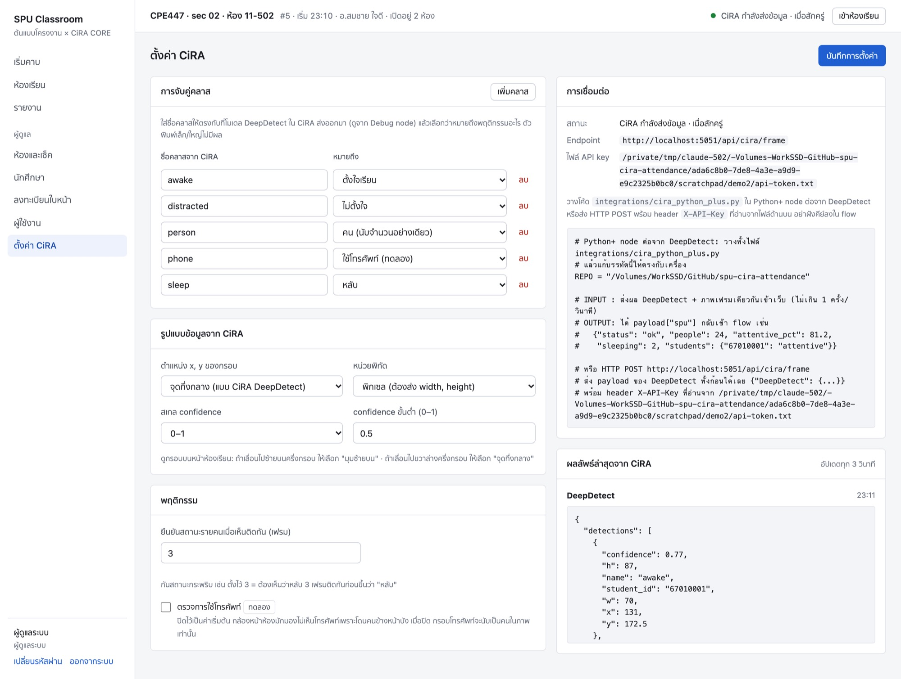

ส่งผล DeepDetect จาก CiRA เข้าเว็บ (INPUT) และรับผลสรุปกลับเข้า flow ของ CiRA (OUTPUT) ตั้งแต่ติดตั้งจนตรวจรับบนเครื่องจริง
mainpython app.py เปิด http://127.0.0.1:505011-501) เซ็ค รายชื่อ และภาพใบหน้า แล้ว อาจารย์ เข้าสู่ระบบ → เลือกห้อง → เลือกเซ็ค → เริ่มคาบ (ไม่เปิดคาบ = ข้อมูลถูกปฏิเสธ)integrations/cira_python_plus.py แก้ REPO และ ROOM (รหัสห้องของกล้องตัวนี้)payload.spu.status = "ok"| ทิศทาง | ข้อมูล | ช่องทาง |
|---|---|---|
| INPUT CiRA → เว็บ | ผล DeepDetect ต่อเฟรม (ชื่อคลาส, confidence, กรอบ) + ภาพเฟรมเดียวกัน (ไม่บังคับ) | Python+ → POST /api/cira/frame |
| INPUT CiRA → เว็บ | ผลของ function อื่น เช่น DeepClassif ไว้ดูโครงสร้าง (ไม่นำไปคำนวณ) | POST /api/cira/output |
| OUTPUT เว็บ → flow | ผลสรุปเฟรมล่าสุดใส่กลับใน payload: จำนวนคน, % ตั้งใจ, หลับ, ใครถูกจำได้และทำอะไรอยู่ | payload["spu"] ให้ node ถัดไปใช้ |
| OUTPUT เว็บ → CiRA | สรุปทั้งห้องช่วง 10 วินาที + รายชื่อพร้อมสถานะ (ใช้ทำแจ้งเตือนได้) | GET /api/live |
| OUTPUT เว็บ → คน | หน้าห้องเรียนสด, รายงานรายนาที/รายคน, ไฟล์ CSV | หน้าเว็บ / GET /api/sessions/<id>/export |
ต้องรันบนเครื่องเดียวกัน เว็บรับเฉพาะ 127.0.0.1 / localhost ถ้า CiRA อยู่อีกเครื่อง ให้ย้ายเว็บไปไว้เครื่อง CiRA อย่าเปลี่ยนเป็น 0.0.0.0 เพราะยังไม่มีระบบล็อกอินและ HTTPS
ต้องใช้ CiRA CORE รุ่น desktop รุ่น browser (ciracore.cira-ai.com) ไม่มี Python+ และ REST node
ต้องใช้ Python 3.9–3.12 บนเครื่องที่รัน CiRA CORE (เว็บใช้ Python ของตัวเอง แยกจาก Python ที่ CiRA ใช้)
git clone https://github.com/Porlager/spu-cira-attendance.git
cd spu-cira-attendance
python3 -m venv .venv
source .venv/bin/activate # Windows: .venv\Scripts\activate
pip install -r requirements.txt
python app.py # เปิด http://127.0.0.1:5050data/ พร้อม data/api-token.txt (API key) และฐานข้อมูล data/attendance.sqlite3PORT=5051 python app.py เก็บข้อมูลที่อื่นด้วย SPU_DATA_DIR=/path python app.pyROOM ที่ CiRA ส่งมา) เพิ่มเซ็ค เลือกห้องและอาจารย์ แล้วนำเข้ารายชื่อจาก CSVใช้ตัวจำลองดูว่าหน้าเว็บทำงานอย่างไร ระบบเปิด "คาบจำลอง" แยกให้และติดป้าย ข้อมูลจำลอง ทุกจุด ตัวจำลองส่งกรอบรูปแบบเดียวกับ DeepDetect จริง
python integrations/simulate_cira.py --seconds 120 --with-identitiesตัวจำลองไม่ทำงานถ้ามีคาบจริงเปิดอยู่ และเว็บไม่รับข้อมูลจำลองเข้าคาบจริง ตัวเลขจากตัวจำลองเป็นค่าสุ่ม ห้ามใช้เป็นผลทดลอง
ต่อ Debug node หลัง DeepDetect แล้วดูโครงสร้างจริงของรุ่นที่ติดตั้ง ตามเอกสาร CiRA CORE 2025 (JavaScript Update หน้า 27–28) ผล DeepDetect หน้าตาประมาณนี้:
{
"DeepDetect": {
"count": 2,
"counts": {"awake": 1, "sleep": 1},
"im_w": 1280, "im_h": 720,
"objects": [
{"id": 0, "name": "awake", "confidence": 0.91, "x": 290, "y": 390, "w": 180, "h": 260},
{"id": 1, "name": "sleep", "confidence": 0.84, "x": 650, "y": 390, "w": 180, "h": 260}
]
}
}ตัวอย่างนี้เขียนขึ้นตามรูปแบบในเอกสาร ตัวเลขไม่ใช่ผลจากโมเดลจริง
| field | ตามเอกสาร CiRA | สิ่งที่ต้องเช็คบนเครื่องจริง |
|---|---|---|
name | ชื่อคลาสที่ตั้งตอนเทรนโมเดล | จดทุกชื่อ ไปจับคู่ในหน้าตั้งค่า |
x, y | จุดกึ่งกลางกรอบ หน่วยพิกเซล | กรอบบนเว็บต้องทับคนพอดี |
w, h | กว้าง/สูงของกรอบ พิกเซล | — |
confidence | 0–1 (บนจอแสดงเป็น % แต่ค่าใน payload เป็น 0–1) | ถ้าเห็นค่าเกิน 1 ให้ตั้งสเกล 0–100 |
im_w, im_h | ขนาดภาพที่ใช้ตรวจ เว็บใช้แปลงพิกัดให้อัตโนมัติ | ถ้าไม่มี ต้องแนบภาพหรือส่ง width/height |
key DeepDetect | บาง build ใช้ชื่ออื่น เช่น DeepDetectCPU | ถ้ามี detector เดียว ระบบหาเอง ถ้ามีหลายตัวต้องระบุ |
เปิดหน้า ตั้งค่า CiRA แก้แล้วกด "บันทึกการตั้งค่า" มีผลกับเฟรมถัดไปทันที ไม่ต้องรีสตาร์ท

ใส่ชื่อคลาสให้ตรงกับ Debug (ตัวพิมพ์เล็ก/ใหญ่ไม่มีผล) แล้วเลือกว่าหมายถึงอะไร ชื่อที่ใส่ไว้ตอนนี้ (awake, distracted, sleep, phone, person) เป็นตัวอย่าง:
| เลือก | ความหมาย |
|---|---|
| ตั้งใจเรียน | กรอบพฤติกรรมของคนหนึ่งคน นับเป็นตัวตั้งของ % ตั้งใจเรียน |
| ไม่ตั้งใจ | เช่น หันคุย มองที่อื่น |
| หลับ | นับในยอดหลับของทั้งห้อง และผูกกับชื่อถ้าจำหน้าได้ |
| ใช้โทรศัพท์ (ทดลอง) | นับเฉพาะเมื่อเปิดสวิตช์ "ตรวจการใช้โทรศัพท์" ถ้าปิด กรอบนี้นับเป็นคนในภาพเท่านั้น |
| คน (นับจำนวนอย่างเดียว) | กรอบ person ทั่วไป ใช้นับจำนวนคน ไม่นับใน % ตั้งใจ |
| ไม่นับ | ข้ามคลาสนี้ เช่น chair, book |
คลาสที่ CiRA ส่งมาแต่ยังไม่ได้จับคู่ จะขึ้นเป็นปุ่ม "+ ชื่อคลาส" ใต้ตาราง กดเพื่อเพิ่มได้ทันที ระหว่างนั้นระบบข้ามคลาสนั้นไปก่อน
สูตร: ตั้งใจเรียน (%) = ตั้งใจ ÷ (ตั้งใจ + ไม่ตั้งใจ + หลับ + ใช้โทรศัพท์ถ้าเปิด) · จำนวนคน = ค่ามากกว่าระหว่างจำนวนกรอบ "คน" กับจำนวนกรอบพฤติกรรม จึงใช้โมเดล person กับโมเดลพฤติกรรมพร้อมกันได้โดยไม่นับซ้ำ
| ช่อง | ค่าเริ่มต้น | หมายเหตุ |
|---|---|---|
| ตำแหน่ง x, y ของกรอบ | จุดกึ่งกลาง | ตรงกับ DeepDetect ถ้ากรอบเลื่อนไปซ้ายบนครึ่งกรอบ แปลว่าข้อมูลเป็นมุม ให้เลือก "มุมซ้ายบน" |
| หน่วยพิกัด | พิกเซล | ใช้ im_w/im_h ใน payload หรือภาพที่แนบมาแปลงให้ |
| สเกล confidence | 0–1 | หรือ 0–100 ระบบหารให้เอง ห้ามหารซ้ำใน Python+ |
| confidence ขั้นต่ำ | 0.5 | ต่ำกว่านี้ไม่นับ |
| ยืนยันสถานะรายคน (เฟรม) | 3 | ต้องเห็นพฤติกรรมเดิมติดกัน N เฟรมก่อนเปลี่ยนสถานะ กันกระพริบ |
| ตรวจการใช้โทรศัพท์ | ปิด | กล้องหน้าห้องมักโดนบัง ทดลองแล้วค่อยตัดสินใจ |
Python+ node ของ CiRA ใช้ฟังก์ชัน handle_request(req) ที่อ่านข้อมูลด้วย getReqData(req) และส่งต่อด้วย makeRespData(payload, img) (Intro 2025 หน้า 14) ไฟล์ integrations/cira_python_plus.py ใน repo เขียนตามแบบนั้นแล้ว:
import sys
REPO = "/absolute/path/spu-cira-attendance" # <-- แก้บรรทัดนี้ให้ตรงกับเครื่อง
BASE_URL = "http://127.0.0.1:5050"
ROOM = "11-501" # รหัสห้องของกล้องตัวนี้ (เว้นว่างได้ถ้าเปิดคาบทีละห้อง)
SEND_IMAGE = True # False = ส่งเฉพาะกรอบ (เช็คชื่อรายคนไม่ได้)
TIMEOUT = 2 # วินาที กัน flow ค้างถ้าเว็บไม่ตอบ
sys.path.append(REPO + "/integrations")
from cira_bridge import error_message, flow_output, send_detections
TOKEN_FILE = REPO + "/data/api-token.txt"
_last = {"status": "waiting"}
def handle_request(req):
global _last
payload, img = getReqData(req)
frame = img if SEND_IMAGE and getattr(img, "size", 0) else None
try:
result = send_detections(payload, TOKEN_FILE, frame_bgr=frame, # INPUT
base_url=BASE_URL, timeout=TIMEOUT, room=ROOM or None)
if result is not None:
_last = dict(flow_output(result), status="ok")
except Exception as error: # เว็บปิด/ยังไม่เปิดคาบ: flow ต้องเดินต่อ
_last = {"status": "error", "error": error_message(error)}
payload["spu"] = _last # OUTPUT
return makeRespData(payload, img)img เข้าเว็บ ระบบหา objects, im_w, im_h เอง ย่อภาพเหลือกว้างไม่เกิน 1280 pxpayload["spu"] ให้ node ถัดไปใช้ (รายละเอียดหัวข้อ 6.1)payload["spu"]["status"] = "error" พร้อมเหตุผลต้องเช็คบนเครื่องจริงก่อน (ยังไม่ได้ทดสอบกับ CiRA ตัวจริง):
print(type(img), getattr(img, "shape", None)) ชั่วคราว ภาพควรเป็น numpy BGR เช่น (720, 1280, 3) ถ้าติ๊ก "Not use image" ไว้ img อาจว่าง โค้ดจะส่งเฉพาะกรอบopencv และ numpy ซึ่งปกติมีอยู่แล้ว bridge ใช้แค่ standard library นอกนั้น รองรับ Python 3.8 ขึ้นไปfunction="ชื่อ key" เพิ่มใน send_detections(...)เช่น DeepClassif ส่งมาดูโครงสร้างในหน้าตั้งค่าได้ (ไม่นำไปคำนวณ เก็บในหน่วยความจำ ขนาดไม่เกิน 64 KB):
from cira_bridge import send_output
send_output("DeepClassif", payload.get("DeepClassif"), TOKEN_FILE, timeout=2)| ชื่อ | ค่าเริ่มต้น | ใช้ทำอะไร |
|---|---|---|
objects | (ต้องมี) | payload ของ DeepDetect ทั้งก้อน, {"objects": [...]} หรือ list ของ objects |
token_file | (ต้องมี) | path ของ data/api-token.txt |
frame_bgr | None | ภาพเฟรมเดียวกัน ใส่แล้วได้: เช็คชื่อด้วยใบหน้า, สรุปรายคน, เห็นภาพจริงบนเว็บ |
width, height | จาก im_w/im_h | ใส่เองเมื่อ payload ไม่มี im_w/im_h และไม่แนบภาพ |
room | None | รหัสห้องจากหน้า "ห้องและเซ็ค" ต้องใส่เมื่อเปิดคาบหลายห้องพร้อมกัน |
function | "DeepDetect" | key ใน payload และชื่อที่แสดงบนเว็บ |
min_interval | 1.0 | ส่งจริงไม่ถี่กว่านี้ (วินาที) |
timeout | 10 | ใน Python+ ใช้ 2 วินาทีพอ |
base_url | http://127.0.0.1:5050 | เปลี่ยนเมื่อใช้ port อื่น |
ใช้เมื่อส่งจากเครื่องมืออื่น ต้องมี header X-API-Key ที่อ่านจากไฟล์ทุกครั้ง ห้ามพิมพ์คีย์ลงใน flow รับทั้ง POST และ PUT และรับได้สองรูปแบบ:
POST http://127.0.0.1:5050/api/cira/frame
Content-Type: application/json
X-API-Key: <อ่านจาก data/api-token.txt>
{"room": "11-501",
"DeepDetect": {"im_w": 1280, "im_h": 720,
"objects": [{"name": "sleep", "confidence": 0.82, "x": 140, "y": 165, "w": 80, "h": 90}]},
"image": "<base64 JPEG/PNG ไม่บังคับ>"}ห่อเป็น {"payload": {...}} ก็ได้ ถ้ามี detector หลาย key ให้เพิ่ม "function": "ชื่อ key"
{"function": "DeepDetect", "width": 1280, "height": 720,
"detections": [{"name": "sleep", "confidence": 0.82, "x": 140, "y": 165, "w": 80, "h": 90}]}| field | ชนิด | กติกา |
|---|---|---|
objects / detections | list | ไม่เกิน 300 รายการ ส่ง [] ได้เมื่อไม่พบใคร |
└ name | string | 1–64 ตัวอักษร |
└ confidence | number | 0 ถึงสเกลที่ตั้งไว้ (1 หรือ 100) |
└ x, y, w, h | number | w, h > 0 กรอบที่ล้นภาพจะถูกตัดให้อยู่ในภาพ |
width, height | integer | 1–10000 ใช้ im_w/im_h แทนได้ ต้องมีอย่างใดอย่างหนึ่งเมื่อหน่วยเป็นพิกเซล |
image | string | base64 หรือ data URL ไม่เกิน 3 MB ด้านยาวไม่เกิน 4096 px |
room | string | รหัสห้อง เช่น 11-501 ต้องใส่เมื่อมีหลายห้องเปิดคาบพร้อมกัน |
session_id | integer | ไม่บังคับ ถ้าใส่ต้องเป็นคาบที่เปิดอยู่ (ใช้แทน room ได้) |
REST node ของ CiRA (RestPutJson): มีใน palette รุ่น desktop แต่ไม่พบเอกสารวิธีตั้ง URL และ header ถ้าใส่ header X-API-Key ไม่ได้ จะใช้ส่งเข้าเว็บนี้ไม่ได้ ให้ใช้ Python+ แทน · JavaScript node ไม่มีเอกสารเรื่องการเรียก HTTP จึงไม่แนะนำ
ทางเดิมที่ยังใช้ได้: POST /api/cira/observations (จำนวนคนอย่างเดียว) และ POST /api/recognize (เช็คชื่อจากภาพอย่างเดียว) ทั้งสองทางไม่สร้างข้อมูลพฤติกรรม
หลัง Python+ node ทุกเฟรมจะมี payload.spu ต่อ Debug เพื่อดู หรือใช้ใน node ถัดไป:
"spu": {
"status": "ok", "seq": 41,
"people": 24, "attentive_pct": 79.2,
"sleeping": 3, "inattentive": 2, "phone": 0,
"students": {"67010001": "attentive", "67010007": "sleeping"},
"ignored_labels": []
}| field | ความหมาย |
|---|---|
status | ok · waiting (ยังไม่ได้ส่งครั้งแรก) · error (ดู error) |
people | จำนวนคนในเฟรมที่ส่งล่าสุด |
attentive_pct | % ตั้งใจของเฟรมนั้น null ถ้าไม่มีกรอบพฤติกรรม |
sleeping / inattentive / phone | จำนวนกรอบแต่ละพฤติกรรม (phone เป็น 0 เมื่อปิดฟีเจอร์) |
students | รหัสนักศึกษาที่จำหน้าได้ในเฟรมนี้ → พฤติกรรมที่ผูกได้ (null = จำได้แต่ไม่อยู่ในกรอบใด) |
ignored_labels | คลาสที่ยังไม่ได้จับคู่ ไปเพิ่มในหน้าตั้งค่า |
ตัวอย่างใช้ใน JavaScript node ถัดไป (ใช้ payload และ print ตามเอกสาร JavaScript Update 2025):
if (payload.spu && payload.spu.status == "ok" && payload.spu.sleeping >= 3) {
print("มีคนหลับ " + payload.spu.sleeping + " คน");
}ตัวเลขในตัวอย่างเป็นข้อมูลสมมติ ค่าในหนึ่งเฟรมแกว่งได้ ถ้าจะทำแจ้งเตือนจริงใช้ค่าเฉลี่ยจากข้อ 6.2
from cira_bridge import get
live = get("/api/live?session=%d" % SESSION_ID, TOKEN_FILE, timeout=2) # SESSION_ID จากคำตอบของ /api/cira/frame
k = live["kpi"]
alert = (k["sleeping"] or 0) >= 3 # None เมื่อยังไม่มีข้อมูล
present = [r["id"] for r in live["roster"] if r["present"]]| field | ความหมาย |
|---|---|
session | คาบ (id, title, room_code, teacher_name, started_at, simulated) หรือ null |
cira.status | live (มีเฟรมใน 5 วิ) · error (ถูกปฏิเสธล่าสุด ดู last_error) · connected · offline |
kpi.registered / present | จำนวนที่ลงทะเบียน / เช็คชื่อแล้วในคาบนี้ |
kpi.attentive_pct | % ตั้งใจ รวมทุกเฟรมใน 10 วินาทีล่าสุด |
kpi.sleeping / inattentive / people | ค่าเฉลี่ยต่อเฟรมใน 10 วินาที (phone เป็น null เมื่อปิด) |
roster[] | เฉพาะนักศึกษาในเซ็ค: id, name, present, has_face, status, status_seconds, frames, shares |
roster[].status | attentive · inattentive · sleeping · phone · unknown (ยังไม่ยืนยัน) · not_seen (ไม่เห็นเกิน 20 วิ) |
GET /api/status | คาบที่เปิด + สถานะการเชื่อมต่อ CiRA (เบา ใช้ตรวจว่าต่อติดไหม) |
GET /api/sessions | รายการคาบทั้งหมด พร้อมจำนวนเฟรมและจำนวนคนที่มา |
GET /api/sessions/<id>/report | สรุปคาบ ไทม์ไลน์รายนาที สัดส่วนพฤติกรรมรายคน |
GET /api/sessions/<id>/export | ไฟล์ CSV (UTF-8 เปิดใน Excel ได้) |
ทุก endpoint ต้องมี header X-API-Key และเรียกได้จากเครื่องเดียวกันเท่านั้น
เว็บตอบ HTTP 400 พร้อม {"error": "..."} ภาษาไทย ข้อความเดียวกันจะอยู่ใน payload.spu.error และแถบบนของหน้าเว็บจะขึ้นจุดแดง
| ข้อความ | แปลว่า / วิธีแก้ |
|---|---|
Connection refused / timed out | เว็บไม่ได้รันอยู่ หรือ port ไม่ตรง รัน python app.py แล้วตรวจ BASE_URL |
HTTP 401: API key required | คีย์ไม่ตรง ตรวจ REPO ว่าชี้ไปที่ repo ที่รันเว็บอยู่ (ถ้าลบโฟลเดอร์ data คีย์จะเปลี่ยน) |
HTTP 403: Localhost only | เรียกผ่าน IP เครื่อง ใช้ 127.0.0.1 หรือ localhost เท่านั้น |
ยังไม่มีคาบเรียนที่เปิดอยู่ เปิดคาบในหน้าเว็บก่อน | เปิดคาบในหน้าห้องเรียน |
คาบเรียนไม่ตรงกับคาบที่กำลังเปิดอยู่ | ส่ง session_id เก่า เอาออก |
มีหลายห้องเปิดคาบอยู่ ต้องส่ง room (รหัสห้อง) มาด้วย | ตั้ง ROOM ใน Python+ ให้ตรงกับห้องของกล้อง |
ห้อง 11-501 ยังไม่มีคาบที่เปิดอยู่ | อาจารย์ยังไม่เริ่มคาบในห้องนั้น หรือรหัสห้องสะกดไม่ตรงกับหน้า "ห้องและเซ็ค" |
ไม่พบผลตรวจจับ ต้องมี detections หรือ payload ที่มี <ชื่อ node>.objects ... | payload ไม่มี objects หรือมี detector หลายตัว ระบุ function |
ต้องส่ง width และ height (พิกเซล) ของภาพที่ใช้ตรวจจับ | payload ไม่มี im_w/im_h แนบภาพ หรือส่ง width/height |
confidence ต้องอยู่ระหว่าง 0–1 ตรวจการตั้งค่า confidence scale | CiRA ส่ง 0–100 ไปตั้ง "สเกล confidence" เป็น 0–100 |
confidence, x, y, w, h ต้องเป็นตัวเลข | บางรุ่นส่งเป็นข้อความ แปลงเป็น float ก่อนส่ง |
w และ h ต้องมากกว่า 0 | กรอบขนาดศูนย์ กรองทิ้งก่อนส่ง |
คาบนี้เป็นคาบจำลอง รับเฉพาะข้อมูลจำลอง | ตัวจำลองเปิดคาบค้างไว้ ปิดคาบนั้นแล้วเปิดคาบจริง |
ภาพไม่ถูกต้องหรือใหญ่เกิน 3 MB | ภาพใหญ่หรือ encode ผิด ใช้ frame_bgr= ของ bridge ซึ่งย่อและ encode ให้ |
Expected payload.DeepDetect.objects ... (จาก bridge) | payload ไม่ใช่รูปแบบที่คาด print(payload) ดูโครงสร้างจริง |
| กรอบเลื่อนไปซ้ายบนครึ่งกรอบ | ข้อมูลเป็นแบบมุม เลือก "มุมซ้ายบน" |
| กรอบเลื่อนไปขวาล่างครึ่งกรอบ | ข้อมูลเป็นจุดกึ่งกลาง เลือก "จุดกึ่งกลาง" |
| กรอบเล็กกระจุกมุมซ้ายบน | CiRA ส่งสัดส่วน 0–1 แต่ตั้งเป็นพิกเซล |
| กรอบใหญ่ล้นภาพ | width/height ที่ใช้ไม่ใช่ขนาดของภาพที่ตรวจ (เช่น ใช้ ROI) |
| ตัวเลขเป็น — ตลอด | ทุกคลาสยังไม่ได้จับคู่ ดูปุ่ม "+ คลาส" ในหน้าตั้งค่า |
| เข้าเรียน 0 แม้เห็นหน้า | ไม่ได้แนบภาพ หน้าเล็ก/ไกลเกินไป ยังไม่มีภาพใบหน้า หรือคนนั้นไม่อยู่ในรายชื่อเซ็ค |
| flow ช้าลงทุก 1 วินาที | รอเว็บตอบ ลด TIMEOUT หรือตั้ง SEND_IMAGE = False ชั่วคราวเพื่อดูว่าภาพเป็นสาเหตุไหม |
# 1) ต่อถึงเว็บไหม (ดูผลในหน้าตั้งค่า "ผลลัพธ์ล่าสุดจาก CiRA")
python integrations/cira_bridge.py --ping
# 2) ส่ง payload ที่คัดลอกจาก Debug มาเป็นไฟล์ (อย่า commit ไฟล์จากห้องจริง)
python integrations/cira_bridge.py payload.json
# 3) ส่งพร้อมภาพเฟรมเดียวกัน
python integrations/cira_bridge.py payload.json --image frame.jpgpayload.spu.status = "ok"img ใน Python+ เป็นภาพ BGR (ดูจาก img.shape)payload.spu.status = "error"room ต่างกัน: ข้อมูลไปถูกห้องบันทึกผลจริงลงรายงานโครงงาน ห้ามอ้างว่าเชื่อมสำเร็จจากการทดสอบ API หรือข้อมูลจำลองอย่างเดียว
0.0.0.0) เพราะยังไม่มีระบบล็อกอินและ HTTPSdata/, ภาพ, payload หรือ CSV จากห้องเรียนจริง repo นี้เป็น publicทุกเส้นทางใต้ /api/ ต้องมี X-API-Key · base URL http://127.0.0.1:5050
| ทิศ | endpoint | ใช้ทำอะไร |
|---|---|---|
| IN | POST / PUT /api/cira/frame | ผล DeepDetect + ภาพ → เช็คชื่อ, พฤติกรรม, ภาพสด |
| IN | POST /api/cira/output | ผล function อื่นไว้ดูโครงสร้าง (หน่วยความจำ ≤ 64 KB) |
| IN | POST /api/cira/observations | ทางเดิม: จำนวนคนอย่างเดียว |
| IN | POST /api/recognize | ทางเดิม: เช็คชื่อจากภาพอย่างเดียว |
| OUT | คำตอบของ /api/cira/frame | ผลเฟรมนั้น → payload["spu"] |
| OUT | GET /api/live?session=<id> | KPI 10 วินาที, รายชื่อในเซ็คพร้อมสถานะ, เฟรมล่าสุด |
| OUT | GET /api/live/frame | ภาพ JPEG เฟรมล่าสุด (404 ถ้าไม่มี) |
| OUT | GET /api/status | คาบที่เปิด + สถานะ CiRA |
| OUT | GET /api/sessions/<id>/report · /export | สรุปคาบ ไทม์ไลน์ รายคน · CSV |
| OUT | GET /api/cira/outputs | ผลล่าสุดของแต่ละ function |
| ตั้งค่า | GET / PUT /api/settings | การจับคู่คลาสและรูปแบบข้อมูล (ปกติแก้ผ่านหน้าเว็บ) |
integrations/cira_python_plus.py | โค้ดวางใน Python+ node (INPUT + OUTPUT) |
integrations/cira_bridge.py | send_detections, flow_output, send_output, get และ CLI |
integrations/simulate_cira.py | ตัวส่งข้อมูลจำลอง |
behavior.py | กติกาแปลงคลาส normalize กรอบ จับคู่ใบหน้า กันกระพริบ |
docs/WEB_PREVIEW.pdf | ภาพตัวอย่างทุกหน้าเว็บ |
ส่วนที่เอกสารไม่ได้ระบุ (ชนิดของ img, การตั้งค่า RestPutJson) ต้องตรวจบนเครื่องจริงตามหัวข้อ 4 และ 8